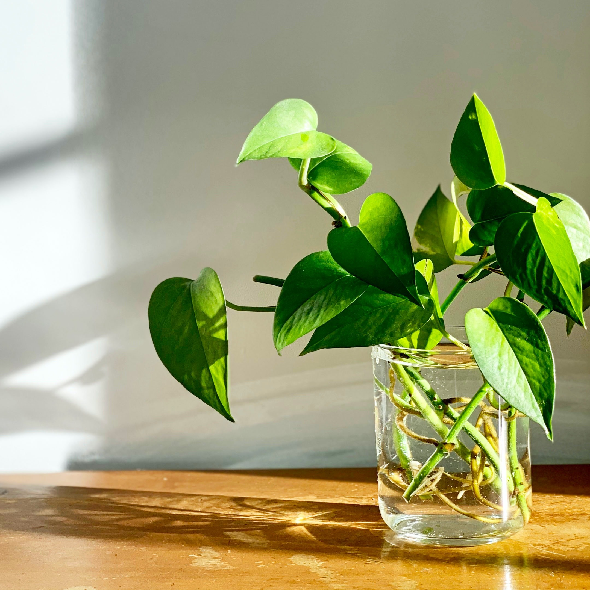

Pothos
Epipremnum aureum

The pothos is a vine plant that has pointed, heart-shaped green leaves that are sometimes
variegated with white, yellow, or pale green striations. Pothos can be planted indoors throughout the entire year and will grow quickly,
often adding between 12 to 18 inches of length in a month. Be aware that this plant is toxic to pets
Care
While pothos likes bright, indirect light, it can also thrive in low light areas or those that have only have fluorescent lighting,
making it an excellent option for offices and dorm rooms. Suddenly pale-looking leaves mean the plant is receiving too much sun.
Pothos plants thrive in ordinary, well-draining potting soil and likes to have its soil dry out completely between waterings.
The plant will indicate when it needs water by starting to droop.
Pothos should be kept in temperatures that are consistently above 50 degrees Fahrenheit and they like high humidity.